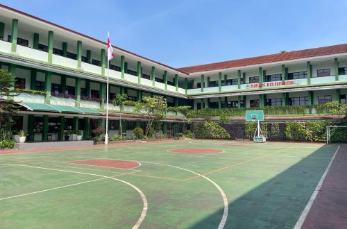

Profil & Visi Misi

SMA Negeri 10 Depok didirikan secara resmi pada tanggal 7 April 2014. Sekolah ini memegang teguh lima nilai luhur budaya Sunda: Cageur, Bageur, Bener, Pinter, dan Singer.
Visi Sekolah: Mewujudkan lulusan yang berakhlak mulia, unggul dalam prestasi dan inovasi, berbudaya lingkungan, serta berwawasan global.
Fasilitas Unggulan: Ruang Kelas Baru (RKB), Infrastruktur IT Kurikulum Merdeka, Taman Lingkungan Asri, dan Area Sanitasi Terawat.
Data Informasi & Ketenagakerjaan
| Kategori | Informasi Detail |
|---|---|
| NPSN & Akreditasi | 69851425 | Akreditasi A (Unggul) - Nilai 94 |
| Jumlah Siswa | 0 Siswa (Tahun Data 2026) |
| Kepala Sekolah | Asep Panji Lesmana, S.S. |
| Struktur Kepemimpinan | Wakil Kepala Sekolah (Kurikulum & Sarpras) serta Pembina OSIS/MPK. |
| Tenaga Kependidikan | Dewan Guru Bersertifikasi dan Staf Tata Usaha. |
| Alamat & Kontak | Jl. Raya Curug No.56, Bojongsari, Depok | Telp: (0251) 8617795 |
Ekstrakurikuler & Prestasi
Daftar Ekstrakurikuler:
- Organisasi: OSIS & MPK
- Akademik: Klub Debat Bahasa Inggris (NSDC) & Bahasa Indonesia (LDBI)
- Seni & Budaya: Tari Nusantara
- Kedisiplinan: Paskibra dan Pramuka
- Kerohanian: Rohis / Remaja Masjid
Prestasi Terbaru (2024 - 2026):
- Akademik (2026): 0 Siswa berhasil lolos jalur SNBP ke PTN Favorit (UI, IPB, UPN, UIN, UPI, Unpad).
- Non-Akademik (2024): Tim Paskibra SMAN 10 Depok meraih Juara Harapan 1 LKBB Festival Bela Negara Tingkat Nasional.